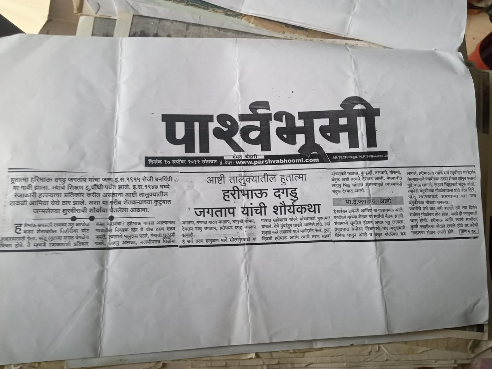

ग्रामपंचायत विषयी
ग्रामपंचायत बनपिंप्री ही गावाच्या सर्वांगीण विकासासाठी कार्यरत आहे. गावातील नागरिकांना आवश्यक सेवा पारदर्शक पद्धतीने पुरविणे हे आमचे उद्दिष्ट आहे.
नवीन सूचना
- 📢 ग्रामसभा – 15 ऑगस्ट 2025
- 📢 घरपट्टी भरण्याची अंतिम तारीख – 31 जुलै
- 📢 स्वच्छता अभियान – प्रत्येक रविवार
पार्श्वभूमी : हरिभाऊ दगडू जगाताप यांची शौर्यकथा

हुतात्मा हरिभाऊ दगडू जगताप यांचा जन्म इ.स. १९९५ रोजी बनपिंप्री या गावी झाला. त्यांचे शिक्षण इ.दावी पर्यंत झाले. इ.स. १९७४ मध्ये रानजकारी हल्ल्याचा प्रतिकार करीत असताना आढी तालुक्यातील टाकळी आंबिया येथे वीर झाले. अशा या गरीब शेतकऱ्याच्या कुटुंबात जन्मलेल्या शुरवीराची शौर्यकथा घेऊन आलेला आढावा.
त्यांच्या कार्यामुळे आजही ते गावकऱ्यांसाठी प्रेरणास्त्रोत आहेत.